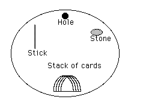
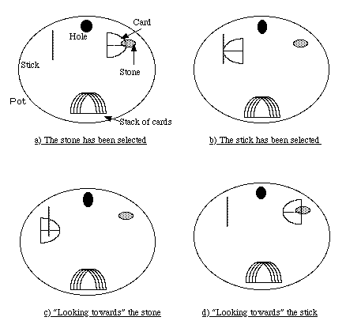
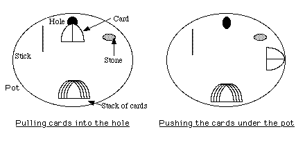

This page presents a simulation (by Michael D. Fischer and David Zeitlyn) of the Mambila system of nggàm 'spider divination'. This allows readers to try out for themselves the principles of interpretation set out below and to see how it can be a practical and useful means of helping one make one's mind up.
All decisions have to be made in a climate of uncertainty. For example, 'What is the best course of treatment for my sick child?' An expert bases their decisions on the results of technical procedures (often called 'tests'). Sometimes these are unambiguous and clear-cut but sometimes they are not and the expert must rely on their experince to interpret the results in a meaningful way. Many people round the world would claim that the techniques they use (such as spider divination) are no different in type from those used by doctors trained in the western tradition. To see where the similarities and differences may lie takes us straight into the complex heart of modern social anthropology. This example raises more issues than it can answer. The reader must read further to help make their own mind up about whether any difference exists, and if so where it lies.
The Mambila people of Nigeria and Cameroon lie at the northern extreme of the South, and at the southern limits of the North, speaking in cultural terms. They form part of the middle belt and although resemblences can be found with groups to the north and to the south they belong to neither region. They earn a living as farmers growing crops for their own subsistence and as cash crops.
Link to map and short bibliography on Mambila
An inhabited spider-hole is located and the area immediately around it cleared of vegetation. Alternatively the spider can be dug out of its hole and taken to a more conveniently-sited abandoned hole. Over the hole is placed an old pot (c. 40cm. diameter), the up-turned base of which is knocked out. This is covered with a shard or piece of tin to act as a lid which can be removed to inspect the entrance to the burrow and its immediate surroundings. To begin divination a stone is rubbed around the top of the pot as the diviner blows into it saying yuo yuo (come out, come out). The procedure for asking a question involves placing a stick and a stone inside the pot, one either side and slightly in front of the hole, usually the stick to the left, the stone to the right. Opposite the hole, about 10 cm. away, the divination leaf-cards are neatly stacked, pointing at the hole.
DIAGRAM 1 Nggam Dù set-up

Two cards are placed over the hole. These are usually those meaning "End"
and "Male" although "Walk" is also used. Their meanings however,
are not usually referred to during interpretation. Some diviners put a stone on the
stack in the early stages of divination so that only the two cards over the hole
can be moved. This stone is only removed when further details are needed. These are
then obtained by allowing the crab to disturb the stack. However, the stack is often
undisturbed even when unweighted.
The question is posed: a small stone in the right hand is tapped on the pot following
the rhythm of the speech which is often muttered. I was told that actual vocalization
is unnecessary. Moreover, when I stumbled over the phrases in Jù Bà
I was told that I could speak English, and divination would understand. Questions
follow a fixed schema allowing two possible responses, one associated with the stick
and one with the stone, no matter what question is at issue. The general form for
a question is as follows:
My divination, you shape-changer, you witch, if XXXXX then take the stick, my divination.
No, it is not that, not-XXXXX / YYYYY / divine further, then take/bite the stone, my divination.
The choice is between one option (XXXXX) and either its direct negation (NOT XXXXX)
or an element from its contrast set (YYYYY) which may be more or less precisely specified.
Commonly the vague alternative mbo mbo, (divine further) is offered which
always has a negative connotation: further divination is about something evil.
The opening phrase can be extended to include other sorts of witches and idioms for
witchcraft, thus becoming a list of possible sources of danger. The crab is described
as being a witch since "it must be one otherwise it would not know about witchcraft."
When enquiring further about this I was told that "it takes one to know one,"
and reminded that people who have inherited witchcraft have "open eyes,"
and can detect witches without necessarily practising witchcraft themselves.
Once the question has been put, the pot is re-covered and the diviner(s) retire for
ten to fifteen minutes to allow the crab to emerge and disturb the cards, thus giving
its answer. Often another pot is inspected and further questions put while the answer
from the first pot is awaited, so a set of parallel questions may be operated. This
provides a consistency check on the veracity of the divination. (Truth-telling is
considered separately below.)
A new line of questioning is marked by breaking a twig and the fragments thrown away
as the diviner states that he will adopt a fresh approach, and the divination is
to follow suit.
When the diviners return, if the crab has emerged and disturbed the cards, the
resulting pattern is read. Often an abbreviated version of the original question
is spoken over the pot immediately prior to removing the lid and inspecting the results.
This section outlines the general rules by which the pattern is interpreted.
Expertise in reading the patterns is acquired firstly by divining with elders expert
in divination, and especially with one's teacher. Although the stereotypical cases
can be recounted (see below) the proper interpretation of an equivocal response can
only be learnt through seeing a similar response and being taught its interpretation.
The success of a particular interpretation can only be evaluated in the light of
subsequent events. While learning to divine, use is made of truth-testing questions
whose answers are easily verified for example: "Will I eat maize porridge today?"
Controlling the question not only tests the veracity of the crab but also exercises
the skill of the diviner. Later one begins to divine alone, but always refining the
technique by induction from past cases. Thus I suspect that more experienced diviners
rarely reject a response as "saying nothing," while this is more common
among beginners.
It should be stressed that these rules were presented to me as such. In general conversation
about divination a circle would spontaneously be drawn on the ground to represent
the spider hole, and a stick, a stone and scraps of leaf positioned to illustrate
examples. I asked how the divination gave its answers, how it could respond to the
questions asked of it. (The responses to further questions about truth-telling are
discussed below). The cases illustrated below were presented to me through the use
of the diagrams as paradigm cases.
The simplest responses do not involve the stack of cards but only the two (usually
"End" and "Male") which are placed over the hole. If a card is
moved towards or onto the stick then the stick has been chosen (sie); similarly,
the stone may be chosen. The position of each card is interpreted firstly on its
own according to these rules, and secondly with reference to the positions of the
other cards. Thus the two cards left over the hole may contradict one another.
The first complication of this simple system is the possibility of the cards "looking,"
which is illustrated below. A card may be viewed as an arrowhead due to the symmetry
of its shape : then if, when on the stick, it points at the stone it is the stone
which has been chosen and vice versa. However, one diviner did not use this interpretation.
He disregarded the "pointed-ness" of the cards, concentrating instead on
whether the cards had been turned over; this distinction is also covered below.
Thus far we have considered the four following possibilities:
DIAGRAM 3.4. Nggam dù basic responses

The idea of a card "looking" can be used to elaborate on the basic answer
which is read from the alternatives attached to the stick and the stone. If a card
on the stone "looks" outside the pot as in a) and b) above, this can be
used to give more information about the evil which threatens. For example, when trouble
in a compound is at issue, a card "looking" outwards directs the diviners
to consider a cause outside the compound. This sort of detail is often ignored when
the answer selected is the alternative which the client prefers.
In principle these four basic possibilities may be doubled by further distinguishing
whether the cards are upside down (maplim). Normally the cards are viewed with the
rib uppermost, and this is how they are laid over the hole. In abstract discussion
of interpretation I was told that an inverted card was "bad", possibly
warning of unforeseen problems, so a card on the stick as in a) above, but inverted,
is similar to one "looking" at the stone... It is possible to use this
principle to aid difficult interpretations, although, in observed divination Wajiri
Bi ignored this feature. Bebeh, who does not refer to "looking," equated
"maplim on stick" to "stone" but said that all cards near
the stone were bad. Despite these variations between diviners there is far more consensus
than is reported among Bamiléké diviners (Pradelles 1986(Pradelles
1986):311-313).
Some responses are portents of death: the pulling of cards down into the hole, the
balancing of cards against the pot wall so that they point (or "look")
down into the ground, or the pushing of the cards outside underneath the pot. B\b\
made the distinction between the simple pulling of cards which remain flat into the
hole, signifying a "bad" situation which must be corrected, and the cards
being folded over in so doing, which tells of a death to come.
DIAGRAM 3.5. Nggam dù Further responses

Further rules of Interpretation
1) If the card(s) placed over the hole are inserted into the stack then the divination
is taken to have selected the card above the place of entry. The meaning of this
card is referred to in the result, usually in the context of the positions of other
cards. This is the only instance in which the meaning of the cards is invoked in
Mambila divination.
2) A card balanced on its base against the pot wall augurs well, whereas balanced
on its point it portends death.
These basic rules are sufficient to interpret the simple cases. The skill in divination
lies in the ability to interpret equivocal results, for example when one card is
on the stick and another on the stone. Most often, however, such a result will be
rejected as saying nothing.